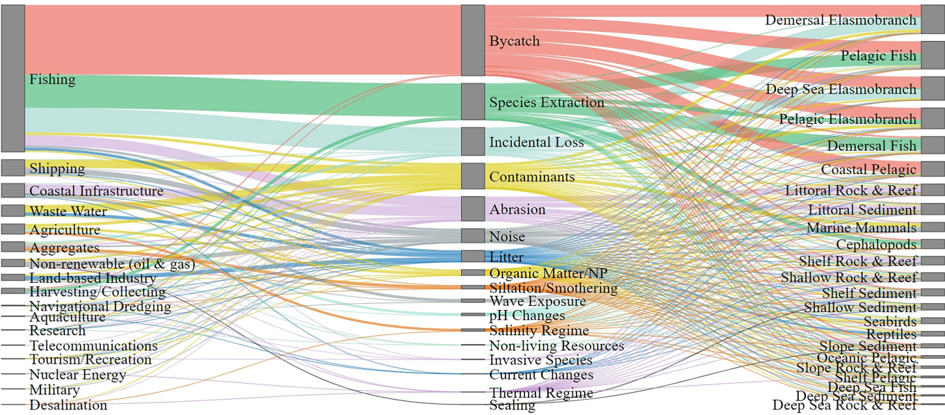
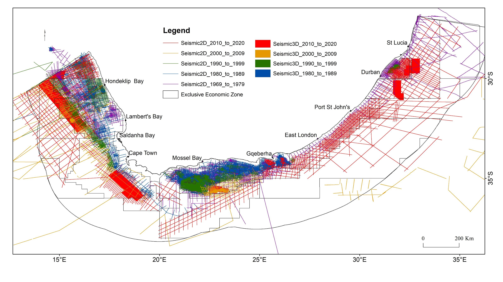
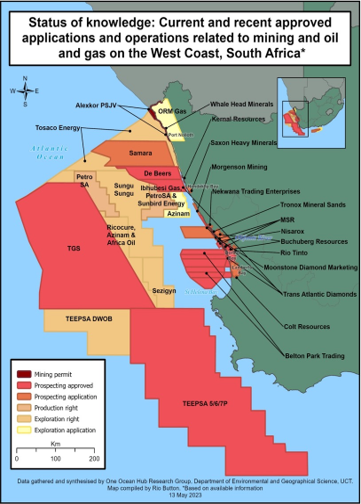

![]()

Summary
Marine ecosystems and species face pressures from an increasing range and intensity of human activities which continue to expand and diversity as South Africa develops its ocean economy. The main pressures impacting marine biodiversity include fishing (commercial, recreational and small-scale), coastal development (including ports and harbours), pollution, shipping, freshwater flow reduction, lethal shark control and climate change. All bays incurred high cumulative pressures, with the highest cumulative pressure recorded for Saldanha Bay. Additional high pressure areas include the area offshore of the Orange River, the shelf edge on the west and south coast, large portions of the Cape inner and middle shelf, the Agulhas Bank and the KwaZulu-Natal Bight. Fishing, particularly industrial fishing, continues to exert the greatest pressures on marine biodiversity (link to KMA5) impacting ecosystems, species and genetic diversity (link to KMB3).
Fishing as an activity can be considered to constitute multiple pressures including species extraction, bycatch and abrasion with effects on the highest number of ecosystem components leading to widespread impacts. Fishing affects most inshore and offshore ecosystems, with greater impact on inshore ecosystems and resources than those in the deepsea. To ensure sustainable fisheries that can support ocean life and livelihoods, impacts on ecosystems, species and genetic diversity need to be effectively managed.
Fishing, petroleum activities and shipping are widespread sectors resulting in many pressures on multiple ecosystem components and species (Figure 2).

Pressure overviews
Aside from fishing, the main pressures impacting marine biodiversity include coastal development (including ports and harbours), mining, pollution, shipping, freshwater flow reduction, lethal shark control and climate change. Escalating pollution concerns including industrial, municipal and agricultural pollution; ocean noise associated with activities such as shipping, mining and oil and gas exploration, and light pollution are a key concern. Anticipated renewable energy installations will have implications for marine ecosystems and species, including through (depending on the energy source) increased underwater noise, habitat alteration and wildlife collisions.
Although long-term data are critical for ecosystems, pressure data sets in the 2025 assessment are outdated and require update. Cumulative pressure mapping is used to calculate ecosystem condition but the condition assessment was not updated in 2025. The first ground truthing of marine ecosystem condition, however, shows that pressure mapping is an effective proxy at broad national scales, but that finer scale pressure mapping is needed to improve condition estimates (Smit et al. paper).
A brief summary of pressures is provided here with more detail provided in the 2018 technical report (Majiedt et al. 2018) which provided a description of each pressure, mapped the relative intensity of each pressure, summarised patterns in the extent and intensity of pressures and reviewed the known biodiversity impacts of each pressure, noting any known mitigation measures or relevant work that is underway.
Fishing
Needs caption
Fishing includes industrial, commercial, small-scale, artisanal and recreational fisheries and South African fisheries incorporate at least 19 sectors that use different methods to target a wide range of resources that include fish, invertebrates and seaweeds.
Fishing methods in South Africa include trawling (demersal and mid-water), longlining (demersal and pelagic), purse-seining, linefishing, squid jigging, trap fishing, hand harvesting, beach seining and wet and dry kelp harvesting with shark control (gill nets and drum lines) considered as a distinct category although this falls with the broader of the IUCN threat category (Tilla / Dew). Overfishing refers to unsustainable harvesting and this links both to the amount of resources harvested but also refers to ecosystem impacts of fisheries through gear impacts on habitats, catching or killing of non-target species (bycatch or incidental mortalities) or impacts on the foodweb (trophic effects) and overall ecosystem condition. Illegal fishing and ghost fishing from lost fishing gear cannot be mapped but also impact biodiversity. More than 700 species are directly affected by fishing in South Africa (Van der Bank et al. 2018) and fisheries affect benthic and pelagic ecosystems (Skein et al. 2022). More information on fisheries impacts on stocks and species threat status is reported in the Species assessment section (link). The demersal trawl and longline fisheries affect seabed habitats although measures have been taken to manage the impacts of trawl fishing through freezing the demersal hake trawl footprint, new spatial management measures and work to identify and protect Vulnerable Marine Ecosystems. Bycatch remains a key concern for trawl and longline fisheries with improvements in managing incidental mortalities of seabirds. (Jody? genetic)
Lethal shark control
South Africa has employed lethal shark control measures in the province of KwaZulu-Natal since 1952 in order to reduce shark numbers to protect bathers from the risk of shark attack.
Lethal shark control (gill nets and baited drum lines) measures are implemented between Richards Bay and Port Edward with …Shanan (current km). Biodiversity concerns associated with the shark control program include the overexploited and threatened status of several target and bycatch species of cartilaginous fishes (link to shark page), turtles and marine mammal species (link to marine species page)and potential ecosystem effects linked to the removal of predatory sharks. (Shanan- Bycatch of harmless elasmobranchs, marine mammals and turtles). Shark control programs add to the already severe pressure on elasmobranchs from other fisheries, particularly longlining and trawl fisheries. Ecosystem effects from shark control programs are difficult to quantify and remain poorly understood. Historical and current nets were considered in the assessment of ecosystem condition.
Box in lethal measures blow out: In False Bay in the western Cape, non-lethal measures are effectively employed with little to no impact on marine life and these measures are not included as a pressure layer in this assessment. Bather exclusion nets and a shark spotter programme help protect bathers in Cape Town. The KwaZulu-Natal Sharks Board has taken steps to reduce the impacts of shark control by replacing nets with baited drum lines in some areas with a reported 70% reduction in net installations and 64% reduced mortalities of sharks and other marine species. Nets are also removed during the annual sardine run to reduce mortalities on sharks and other species and the height of nets has also been increased to reduce capture of rays, skates and wedgefish ( Netting has been reduced in recent times with 28 km of nets reported in 2003, 23 km in 2011 and x km in 2025.
Coastal and offshore mining
Coastal and offshore mining is increasing in South Africa, targeting diamonds, heavy minerals and sand and depending on the method of extraction, can have moderate to very severe impacts on biodiversity.
There is increasing coastal and marine mining activity in South Africa (Figure 2) with impacts on beaches and shallow and deep benthic ecosystems on the shelf. Impacts include habitat destruction and change (including beach morphodynamic type), sediment suspension and increased turbidity, pollution, noise, changes in the distribution and feeding habits of species and the introduction of alien species. Suspended sediments can reduce primary production, decrease feeding efficiency of filter feeders and clog fish gills, with reported changes in community structure. The potential initiation of phosphate mining remains a concern as the impacts of this activity could severely modify large areas of ecosystems and could jeopardise the sustainability of fisheries. The cumulative impacts of mining are a concern with increasing mining activity along South Africa’s west coast and shelf.
Marine petroleum
Needs caption
Marine petroleum activities in South Africa were initiated in 1969 check with more than 300 offshore wells drilled to date and ongoing exploration by seismic survey.
Production has been suspended at the Oribi/Oryx and Sable oil fields (Block 9 off Mossel Bay) and the F-A Gas field and satellites with field development plans underway at the Ibhubesi gas filed off Hondeklip Baai. The impacts of petroleum activities span those impacts associated with drilling and production and also exploration by seismic surveys (link to Figure seismic map or make this the picture?).

Biodiversity impacts associated with drilling and production include habitat loss from infrastructure installation; chemical pollution from water- and oil-based drilling muds, noise and light pollution. These impacts can cause physical and physiological damage and can disrupt marine species feeding, communication and migration and alter species distributions and aggregations. Petroleum infrastructure can also introduce, provide refuge for and facilitate spread of alien and invasive species. Associated increases in shipping activity elevate the risk of ship-strikes to large marine animals. Oil spills and blowouts pose risks with the potential to cause catastrophic impacts to marine biodiversity by oiling species, degrading ecosystems, and disrupting ecological processes, also causing health risks to people. Further, the chemical dispersants used in cleaning up oil spills may impact marine life, and in some cases, are considered more toxic than the oil itself. Although oil and gas production has decreased in South Africa (check with Pumla/stable? See Linda), exploration activities have increased, especially in deep water (Figure 3) and there has been increasing concern about the impacts of seismic surveys on marine species and ecosystems. (Steve to help here) Underwater noise is recognised as a key emerging pressure of increasing concern as ocean industrialisation and shipping is planned for expansion. A cumulative map of seismic surveys was recently compiled (link to map Figure 3) and there is some progress in planning for the integration of underwater noise into assessments and planning (Steve- should we make tech report available?).
5
Needs caption
Shipping is a widespread pressure in South Africa’s marine realm .
South Africa is a maritime nation with considerable ship traffic and one of the highest concentrations of cargo ship and oil tanker traffic. The biodiversity impacts of shipping include ship strikes (collisions between vessels and large marine animals), noise, pollution and the introduction of invasive alien species through ballast water discharge and hull fouling.
7
Coastal development, including port development, is one of the greatest pressures on coastal ecosystems as it results in ecosystem loss, interruption of physical and biological process, and compromises ecosystem resilience; all of which result in loss of coastal ecosystem services (link to Linda coastal page?).
Coastal development within the littoral active zone deprives beaches of the sand stored in dunes and reduces coastal resilience to storms, high wave-energy events and sea-level rise, increasing risks to coastal communities and infrastructure. Such development can require expensive artificial movement of sand or other coastal engineering solutions to mitigate downstream erosion. In addition to coastal development impacts, ports and harbours are the main points of introduction and refugia for alien and invasive species, and activities occurring in ports and harbours contribute to ecosystem degradation from smothering, pollution, underwater noise and anchorage.
8
Needs caption
The biodiversity impacts of mariculture have long been recognised to depend on the species, culture method, stocking density, feed type, husbandry practices and environmental conditions at the site.
The known impacts of mariculture include localised impacts related to fish, mussel and oyster farms and the impacts from effluent which include pollution, eutrophication, introduction of invasive species, pathogens, and disease transfer to wild stocks and impacts on apex predators. As such, aquaculture can impact on ecosystem services. Currently sea-based aquaculture of shellfish is only being undertaken in Saldanha and Algoa Bay. Bays are known to have high retention and therefore lower rates of flushing of pollution and elevated nutrient inputs from aquaculture facilities, which exacerbate the impacts of sea-based aquaculture operations. High stocking densities in aquaculture could potentially result in the evolution of native pathogens (especially viral and bacterial agents) to which wild fish do not have resistance. Little research has been undertaken on the impacts of mariculture in South Africa but local work has highlighted the risks associated with the introduction of alien species, pathogens and diseases and eutrophication. Like petroleum and shipping, mariculture remains an area of projected growth, although there has been little success in sea-based aquaculture of bony fish in South Africa.
Alien and invasive species have profound impact on marine biodiversity with increasing numbers of introduced marine species in South Africa.
Alien species have the potential to displace native species, cause the loss of native genotypes, modify habitats, change community structure, affect food web properties and ecosystem processes, impede the provision of ecosystem services, impact human health and cause substantial economic losses. The main vectors of accidental introductions are ship fouling and ballast water with increasing recognition of the role of petroleum infrastructure in introductions and spread and recreational boating in the intra-regional dispersal of invasive species. The expanding aquarium trade is also an emerging vector of introduction.
Freshwater flow reduction to the coastal and marine environment occurs when water is abstracted from rivers or dammed higher up in the catchment, and/or the cycle of an estuary has been disrupted.
This results in freshwater, and the accompanying sediment that is vital to many marine biodiversity processes, failing to reach the sea. This can impact the that flow of sediment that form and maintain beaches, mud habitats and other offshore unconsolidated sediment ecosystems. Flow reduction leads to physical habitat changes including loss of beach and mud habitat, impacts on ecological functions and services including nursery functions, environmental cues, productivity, nutrient provision and food web processes. Potential reductions in key fisheries catches with associated economic impacts have also been reported in South Africa. Altogether, approximately a third of South Africa’s freshwater flow in rivers no longer reaches the ocean. Approximately two-thirds of the contribution of the Orange River and nearly a third of the freshwater flow of the Thukela no longer reach the sea; these are the two largest catchments in South Africa.
Wastewater discharge represents a significant source of pollution and includes a range of inputs, including industrial and municipal effluents, brine discharges from desalination plants, effluents from aquaculture operations, and stormwater and agricultural runoff.
Wastewater discharge into the sea through estuaries and outfalls impairs water and sediment quality, and causes changes in the primary producer and benthic invertebrate communities near discharge points. More than 3 billion cubic metres of waste is discharged annually into South Africa’s marine environment with municipal wastewater treatment facilities accounting for a significant portion thereof, causing greater impacts in areas with weak flushing and long retention. High organic and nutrient loading causes excessive eutrophication, fuelling red tides, harmful algal blooms and anoxia, often leading to fish kills. Consequently, coastal water quality is substantially degraded near major urban centres. Associated microbial pollution can also have serious socio-economic impacts, resulting in beach closure and loss of recreational value and tourism income. Coastal groundwater discharge is similarly enriched by human settlements, impacting shores. Emerging pollution threats include pharmaceutical compounds and personal care products, other organic pollutants, and microplastics. The bioaccumulation and biomagnification of these compounds in food webs can pose toxic risks to lower and higher trophic level biota and humans who consume them. High concentrations of metals, other chemicals, and pollutants have been detected in South African sediments (particularly in ports and harbours), and surf zones of popular recreational beaches, coral reefs and recently canyons with corals, sponges, turtles and their eggs, seabirds and seabird eggs, fish, cetaceans, sharks and marine mammals. Bioaccumulation of pesticides and herbicides in coral reef organisms is an increasing concern. Land-based pollution is also the main source of plastic pollution in the ocean (see below). Plastic, both micro- and macro-plastic, is pervasive and has been recorded at great depths and distance from shore.
Ammunition disposal was practised in demarcated areas of the offshore environment from 1970s until 1995, before the London Protocol (1996 Protocol to the 1972 Convention on the Prevention of Marine Pollution by Dumping of Wastes and Other Matter) came into effect.
Dumped ammunition can cause damage to or smothering of ecosystems and habitat-forming species; potentially detonate, causing localised destruction; and corrode, causing pollution and toxicity, especially from heavy metals. Elsewhere, there is evidence of munition compounds bioaccumulating in marine foodwebs, which is predicted to increase with time and climate change. Presumably, dumped munitions in South Africa have corroded over the past 30-50 years, but the impacts are largely unknown.
Cross-cutting and emerging pressures
Pollution is a cross-cutting pressure linked to many sectors with chemical, pharmaceutical, noise and light pollution all increasing. Heavy metals and hydrocarbons are common marine pollutants in ports, harbours and the marine realm. Plastic pollution is a pervasive marine pressure with impacts on many marine species through ingestion and entanglement. Plastic ingestion causes mortality and illness, especially in seabirds, turtles, sharks and fish and can accumulate in animal tissue and affect foodwebs. Recently plastic has also been linked to the spread of alien and invasive species. Quantities of plastics on beaches are mostly related to urban-industrial centres rather than local population densities with most plastic pollution generated from local land-based sources and entering the sea via rivers and estuaries with increasing quantities of plastics washing into the coastal zone during flood events.
Light pollution or artificial light at night can impact species and ecosystems by interrupting species’ natural circadian rhythms, changing night-time activity through either negative or positive phototaxis. Feeding, breeding and resting behaviours is affected with impacts on turtle hatchlings and seabirds and beach invertebrates of particular concern. For example, several beach species including the Endangered Cape Pill Bugs, Tylos capensis (nocturnal sandy beach isopods; Harris et al. 2025b) are significantly less active at night when exposed to higher light intensities, which reduces their foraging time.
Noise pollution is an increasing concern, particularly in aquatic environments where sound conductivity is greater than in air and were many species rely on sound for prey location and communication. Sources of sound include seismic surveys, shipping traffic, bunkering, various other commercial activities, and boating. Elevated underwater noise can cause direct mortality, lower immunity and increase health risks, change species distributions and disrupt foraging when predators, prey, or both avoid noisy areas, disrupt reproduction and animal communication and social behaviour. Marine mammals and soniferous fish are particularly at risk, including commercially important species such as kingklip, recreationally important species such as grunter and threatened species such as dusky kob and Syngnathid seahorses and pipefish. Recently, penguins have shown sensitivity to underwater noise. Although there are many known impacts from underwater noise, there are still many gaps in our understanding of these pressures and how they may translate into ecosystem impacts. (check in with Steve- what will we make available- Kuhle box Sound Seas link?)

Renewable energy production is important in achieving energy security, reducing climate change impacts, and supporting socio-economic growth in South Africa. The potential for marine renewable energy (MRE) in South Africa includes offshore wind, current, wave, and thermal energy sources. Although no MRE projects currently exist, there are plans for development, e.g. a floating offshore windfarm at Richard’s Bay is under assessment. Potential impacts of MRE include habitat disturbance and loss during construction, and collision risks with wind or current turbines for seabirds and ocean life and increased ocean noise. Wave and current devices may impact cetaceans, turtles, and fish through collision risk, electromagnetic fields, and underwater noise, and marine benthic and pelagic habitats and communities could be impacted by changes to natural seawater flows and sediment transport. Small installations would likely have localised minor impacts but large commercial arrays could significantly alter marine systems over time.
Approach
Pressure data are a key input into ecosystem assessments including the assessment of ecosystem condition, ecosystem threat status and the IUCN Red List of Ecosystems. The 2018 NBA reviewed and mapped 31 pressures on marine biodiversity in South Africa including 19 fisheries sectors, petroleum activities, mining, shipping, ports and harbours, coastal development, mariculture, freshwater flow reduction and pollution (Majiedt et al. 2019). Limited progress in pressure mapping was achieved for the 2025 assessment but seismic surveys and submarine cables were mapped for inclusion in future assessments and an improved finer resolution demersal trawl fishing layer has been compiled (Currie et. At. 203). The 2018 NBA reviewed pressures on marine biodiversity in South Africa including 19 fisheries sectors, lethal shark control, mining, petroleum activities, shipping, ports and harbours, coastal development, mariculture, freshwater flow reduction and pollution. The spatial extent and intensity (where feasible) of the 31 pressures were mapped to support the assessment of ecosystem condition (link to condition page)..
• Demersal Trawling (Inshore and Offshore)
• Kelp Harvesting
• Crustacean Trawling
• Subsistence Fishing
• Midwater Trawling
• Shark Control
• Linefishing
• Sea-based Aquaculture
• Recreational Fishing
• Coastal Development
• Demersal Longline Fishing
• Coastal Disturbance
• Pelagic Longline Fishing
• Mining
• Tuna Pole Fishing
• Petroleum Activities
• Small Pelagic Fishery
• Invasive Species
• Netfishing: Gillnet Fishing
• Port and Harbour Activities
• Netfishing: Beach-seine Fishing
• Shipping
• West Coast Rock Lobster Harvesting
• Wastewater Discharge
• South Coast Rock Lobster Harvesting
• Ammunitions Dumping
• Squid Harvesting
• Dumping of Dredge Material
• Abalone Harvesting
• Freshwater Flow Reduction
• Oyster Harvesting
Limited progress in pressure mapping was achieved for the 2025 assessment but seismic surveys were and submarine cables were mapped for inclusion in future assessments and an improved finer resolution demersal trawl fishing layer has been compiled (Currie et al. 2023) demersal trawl fishing layer.
Technical documentation
Code repositories
Cumulative pressure and condition calculations and mapping: gitlab.com/marine_pressure_layers/pressure_layers
Key publications
Recommended citation
Sink, K. 2025. Pressures. National Biodiversity Assessment 2025. South African National Biodiversity Institute. http://nba.sanbi.org.za/.